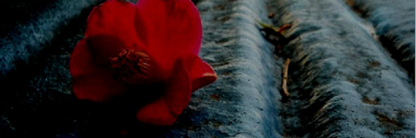

Joandora
가장 제주다운 수산리집
이용 안내, 객실 소개, 예약 방법, 예약하기
성산의 날씨는 다음주 내내 높은 구름에 햇살 가득이라고 합니다. 목요일이면 섭씨 27도까지 오른다고 하지만, 늘 부는 바람이 쾌적한 균형을 잡아 마당에 나가 앉아 있는 시간이 많아질듯 합니다.
오늘은 사진에 보이는 긴 돌담을 따라 들어오는 요안도레 올레 입구에 특곤색의 대문을 달았습니다.
내일은 두달 여동안 밖거리에 만든 게스트 하우스에 연백색의 황토 페인트를 칠할 예정입니다. 그리고 이것저것 사소한 저이를 마치고 나면, 나이 드시고 젊고 한 미지의 새식구들을 설렘으로 만나고 함께하고, 도시의 바쁜 생활로 소원해진 오래된 친구와의 우정을 이 제주에서 새롭게 열어나가기 위해 요안도라를 세상에 알리려고 합니다.
